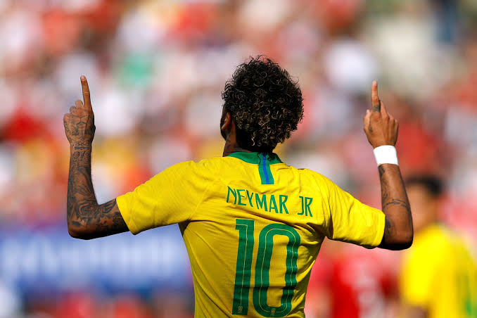

The Magic of Joga Bonito | ตำนานแข้งแห่งทัพเซเลเซา บราซิล
เนย์มาร์ ดา ซิลวา ซังตูส ฌูนีโยร์ (Neymar da Silva Santos Júnior) เกิดเมื่อวันที่ 5 กุมภาพันธ์ ค.ศ. 1992 คือเพชรเม็ดงามแห่งวงการลูกหนังบราซิล ผู้สืบสานมนต์เสน่ห์แห่งสไตล์การเล่น Joga Bonito (ฟุตบอลที่สวยงามและความสุข) ด้วยทักษะการเลี้ยงบอลที่เหนือชั้น ความเร็ว และความคล่องตัวอันเป็นเอกลักษณ์ ทำให้เขาขวัญใจของแฟนบอลทั่วโลก
| ชื่อเต็ม | Neymar da Silva Santos Júnior |
|---|---|
| วันเกิด | 5 กุมภาพันธ์ 1992 |
| สัญชาติ | บราซิล (Brazil 🇧🇷) |
| หมายเลขเสื้อทีมชาติ | เบอร์ 10 |
| เกียรติประวัติสูงสุด | ดาวยิงสูงสุดตลอดกาลทีมชาติบราซิล (แซงหน้าเปเล่) |
เนย์มาร์ไม่ได้เป็นเพียงแค่นักฟุตบอลที่เก่งกาจ แต่เขายคือผู้สร้างความบันเทิงในสนาม ความสามารถในการหลอกคู่ต่อสู้ รอยยิ้ม และแพสชันเวลาลงเล่นให้ทีมชาติบราซิลทำให้การดูฟุตบอลสนุกและตื่นเต้นเร้าใจอยู่เสมอ สมกับเป็นตัวแทนความภาคภูมิใจของชาวแซมบ้า
